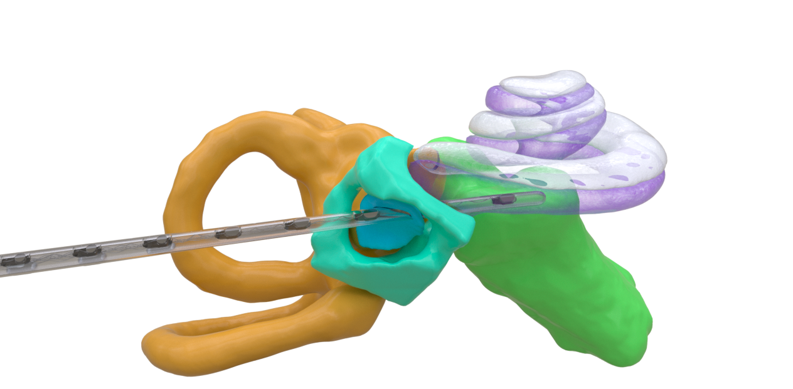

Medical Animation
Animation
Dein Browser unterstützt dieses Videoformat nicht.
Electrode insertion – preview
Dein Browser unterstützt dieses Videoformat nicht.
Electrode insertion – eased, feedback pass 4

Beauty render
Project description
Ear Implant - Electrode Insertion.